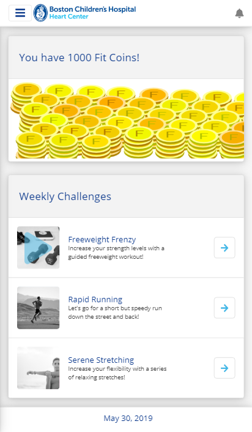
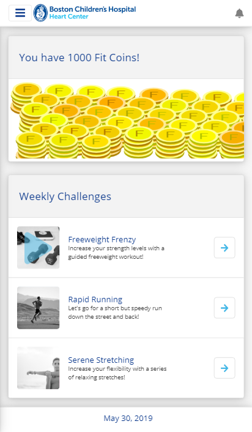
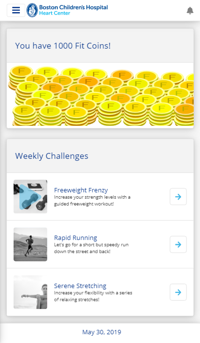

During 2019, I worked at the Heart Center as a co-op student.
Over there, I was their Web UI Innovator and Graphics Designer.
My main focus was on an app called IGNYTE, a cardiac fitness program designed specficically
for patients with heart issues.
As a front end developer, I mainly worked with Angular and Sass. As a designer, I used
programs such as Illustrator and Balsamiq, and had the opportunity to interview patients.

Mockups
All these mockups were done through Balsamiq. My team requested me to redo the screens
for the workout entry screen, and try to create a new screen for the awards and trophies
screen.
Screens
Once the mockups were good to go, I used Angular and Sass to make the actual pages. I
also got the opportunity to use typescript to code things such as the coin animation
drops.
Some of my work included creating graphics, such as creating the IGNYTE icon with Adobe
Illustrator. We went through many different symbols and variations before we decided on
the final icon.
Takeaways
As Boston Children's Hospital was my very first co-op, I felt I learned a great deal of
technical skills such as JQuery, Sass, and Angular. I also got the opportunity to improve my
design skills, such as using programs like Adobe Illustrator to create icons and Adobe
Premiere to create videos. However, I feel my biggest takeaway was definitely learning how
to become both an independent worker and a team member. I got to participate in daily
scrums, weekly meetings with our end users (doctors and sometimes patients), and a lot of
check-ins within our team. As the only pure front end designer, I got the opportunity to
make an impact...
 



{kind=link}
{kind=link}
{kind=link}
{kind=link}
{kind=link}
{kind=link}